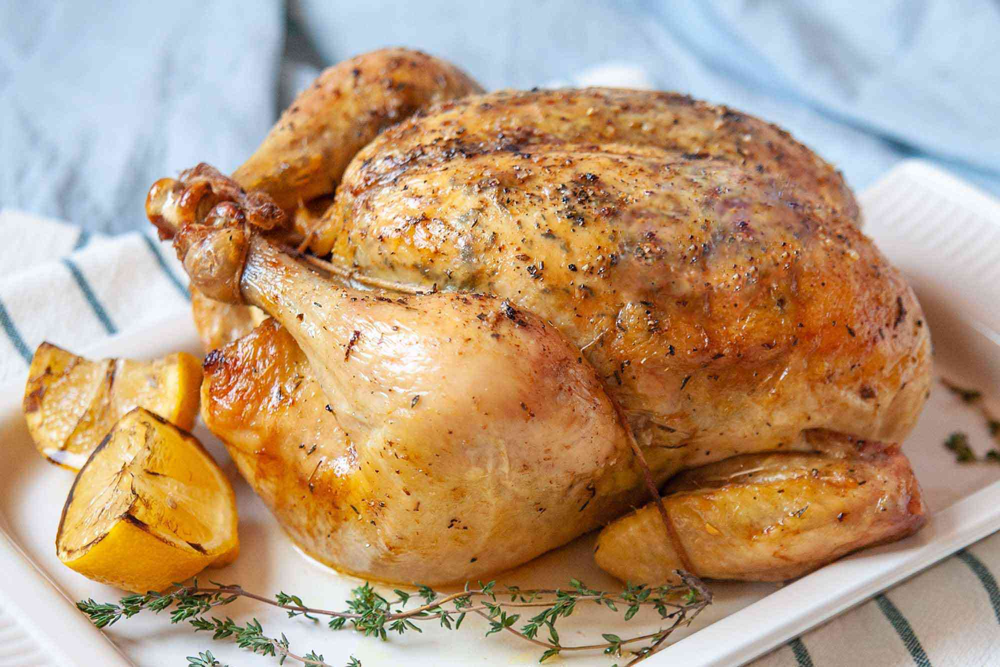
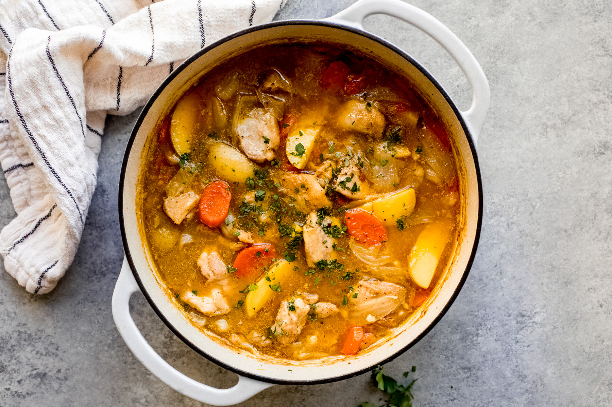

Chicken

Description
This is just a recipe for Chicken Madras
- 1 tbsp olive oil
- 2 chicken breasts, chopped
- 1 onion, diced
- 1 red pepper, thinly sliced
- 2 garlic cloves, crushed
- 1 tbsp Cajun seasoning
- 250g long grain rice
- 400g can plum tomato
- 350ml chicken stock
- STEP 1
Heat 1 tbsp olive oil in a large frying pan with a lid and brown 2 chopped chicken breasts for 5-8 mins until
golden.
- STEP 2
Remove and set aside. Tip in the 1 diced onion and cook for 3-4 mins until soft.
- STEP 3
Add 1 thinly sliced red pepper, 2 crushed garlic cloves, 75g sliced chorizo and 1 tbsp Cajun seasoning, and cook for
5 mins more.
- STEP 4
Stir the chicken back in with 250g long grain rice, add the 400g can of tomatoes and 350ml chicken stock. Cover and
simmer for 20-25 mins until the rice is tender.

Description
This is just a recipe for Chicken Stew Creamy
- 3 leeks , halved and finely sliced
- 2 tbsp olive oil , plus extra if needed
- 8 small chicken thighs
- 1 tbsp butter
- 500ml chicken stock
- 1 tbsp Dijon mustard
- 75g crème fraîche
- 200g frozen peas
- 3 tbsp dried or fresh breadcrumbs
- small bunch of parsley , finely chopped
- STEP 1
Tip the leeks and oil into a flameproof casserole dish on a low heat, add the butter and cook everything very gently
for 10 mins or until the leeks are soft.
- STEP 2
Put the chicken, skin-side down, in a large non-stick frying pan on a medium heat, cook until the skin browns, then
turn and brown the other side. You shouldn’t need any oil but if the skin starts to stick, add a little. Add the
chicken to the leeks, leaving behind any fat in the pan.
- STEP 3
Add the stock to the dish and bring to a simmer, season well, cover and cook for 30 mins on low. Stir in the
mustard, crème fraîche and peas and bring to a simmer. You should have quite a bit of sauce.
- STEP 4
When you’re ready to serve, put the grill on. Mix the breadcrumbs and parsley, sprinkle them over the chicken and
grill until browned.